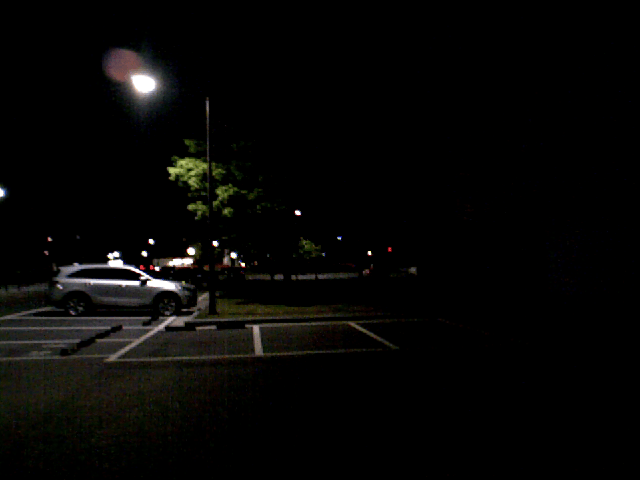
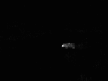
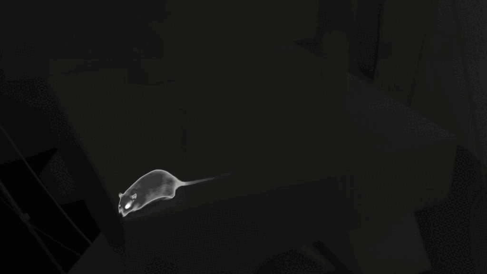
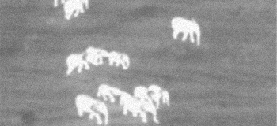
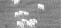
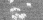
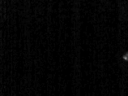

Experimental Results
The left column shows the enhanced thermal input, the middle column shows the RGB video synthesized by ThermalDreamer, and the right column shows the RGB reference.



Xinyu Hou*,1, Sangyun Shin*,1, Jonas Beuchert2, Ta-Ying Cheng1, Qian Xie3, He Liang1, Shitong Xu1, Qianyi Deng1, Andrew Markham1, Niki Trigoni1
*Equal contribution
1Department of Computer Science, University of Oxford
2School of Computer Science and Informatics, Cardiff University
3School of Computer Science, University of Leeds














